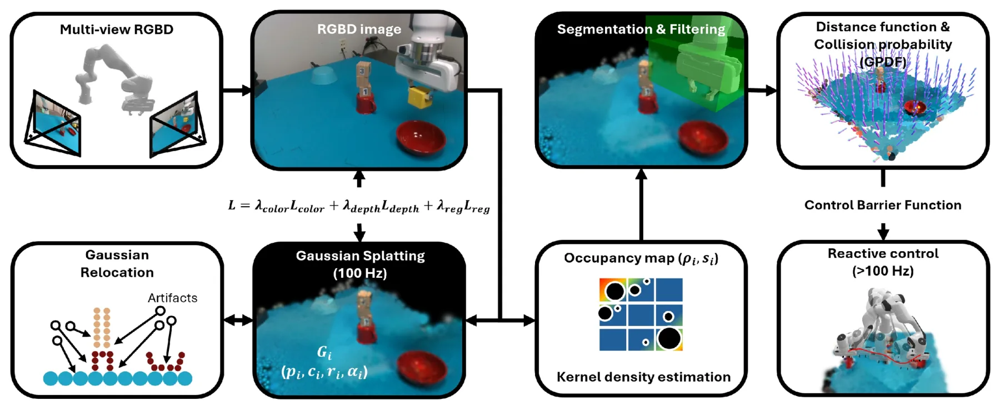
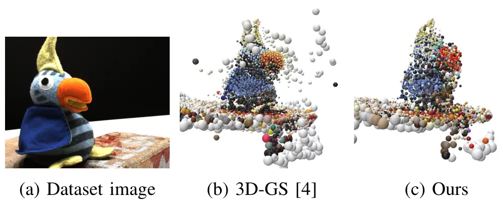
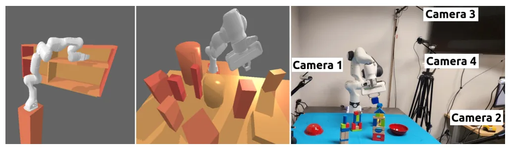
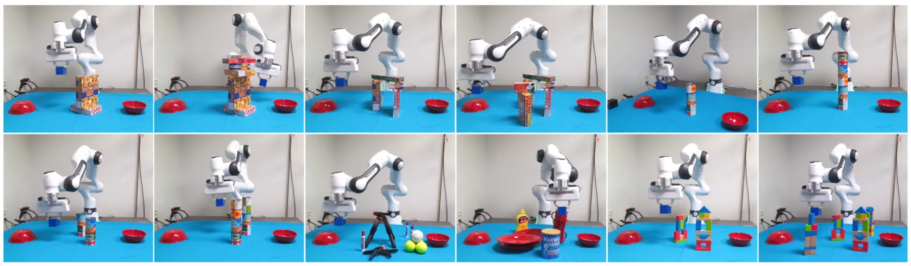
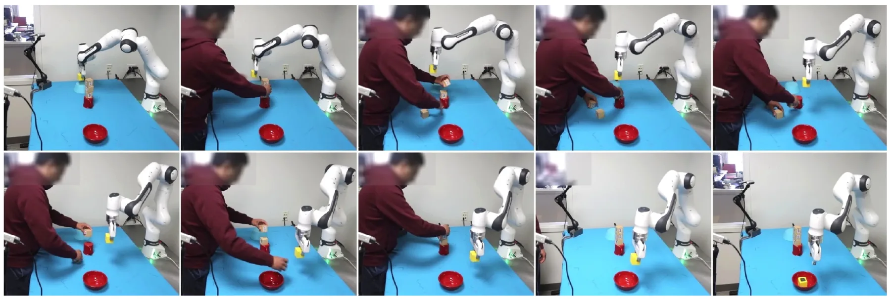
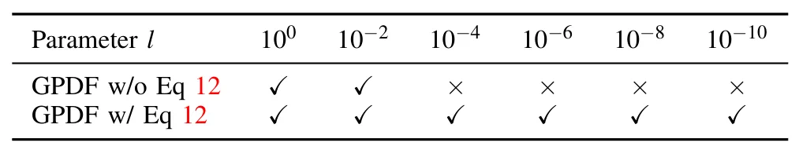
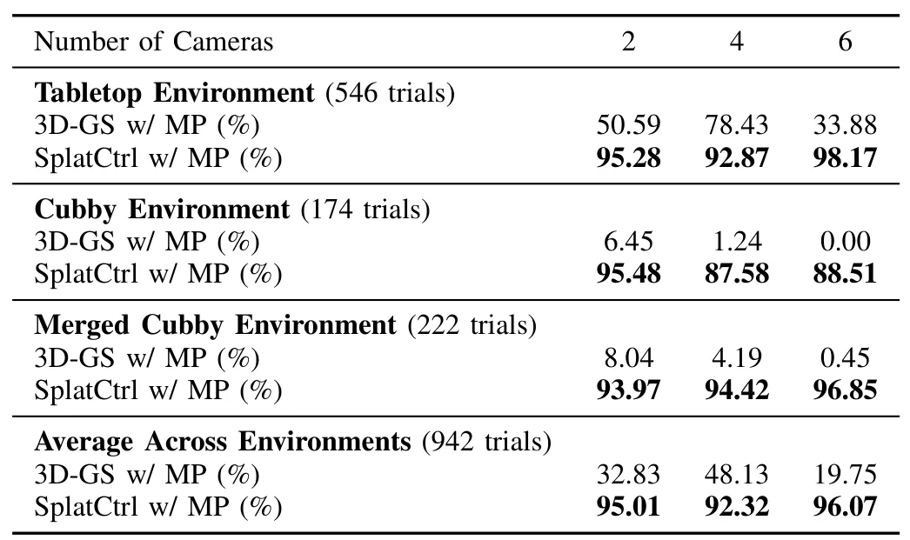

SplatCtrl：基于高斯场景表示与反应式机器人控制的感知—动作耦合SplatCtrl: Perception-Action Coupling via Gaussian Scene Representations and Reactive Robot Control
3DGS 地图不只用于渲染，而是直接形成可微碰撞距离并闭环控制，具备明确机器人价值；与相机定位/回环关联较弱，需关注地图更新延迟、安全证明边界和动态障碍实验强度。
一句话工作总结
从动态 3DGS 地图导出连续可微距离度量，并通过控制屏障函数驱动机械臂实时避碰。
摘要
SplatCtrl 面向未知且持续变化环境中的机械臂避碰，把实时场景重建和反应式运动生成统一起来。系统基于 3DGS，引入 voxel filtering 与动态 Gaussian relocation，从 RGB-D 流高效重建并适应环境变化；同时从各向同性 Gaussians 推导连续 signed distance functions，得到稳定、可微的碰撞概率估计，并将其纳入 control barrier functions。仿真、真实机器人及人机共享工作空间实验验证了实时重建与平滑可靠控制的耦合效果。
Robotic manipulators excel in structured environments but face substantial challenges in unstructured and dynamic settings. This paper presents SplatCtrl, a unified framework for real-time scene reconstruction and reactive robot motion generation to enable collision-free robotic arm control in previously unseen and continuously changing environments. Building on 3D Gaussian Splatting (3D-GS), we introduce a hybrid voxel-based filtering and dynamic Gaussian relocation strategy that supports efficient scene reconstruction from RGB-D streams while accommodating environmental changes. For safe and reactive control, we further propose a method for deriving continuous signed distance functions from isotropic Gaussians, providing stable and differentiable collision probability estimates that bridge classical distance fields with the modern implicit representation. These continuous distance metrics are incorporated into control barrier functions, resulting in a unified perception-action coupling framework that supports smooth and reliable real-time motion generation in response to scene changes. Experimental validation in simulation, on physical robot, and within shared human-robot workspace demonstrates the framework's effectiveness, achieving integrated scene reconstruction and reactive control in uncertain, and dynamic environments.
中文解读摘录
图表/页面预览

{kind=link}

{kind=link}

{kind=link}

{kind=link}

{kind=link}

{kind=link}

{kind=link}
